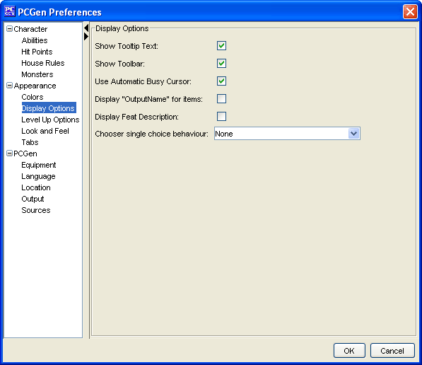

Appearance Display Options

The
Display Options
menu option will allow you
to set these options:
-
Chooser single choice behavior
This sets
PCGens behavior when a pop up chooser has but a single choice.
-
None
- Default setting, user must add the
choice and click the Close button.
-
Add the single choice to the selection
- user
must click the Close button.
-
Add the single choice and close
- the pop up
chooser window is bypassed entirely.
-
Display "OutputName" for equipment
. This will
display equipment by the name set by it's OUTPUTNAME tag (if it has
one) in the gear list.
-
Display "OutputName" for spells
. This will
display spells by the name set by it's OUTPUTNAME tag (if it has
one) in the spell lists.
-
Display Feat Description
. This sets the
description field to display the short "flavor text" of the feat
rather than the longer benefit text. If there is no benefit text it
will display the short description.
-
Show the Toolbar
. This allows the user to have
a toolbar beneath the menus to help provide quick one click
solutions to common tasks within PCGen such as: save, print, open
folder, etc. If this option is deselected than the toolbar will not
appear beneath the menus.
-
Show Tooltips Text
. Shows different tips on
what each screen, tab, and option does. It displays helpful hints
and guides for what each part of PCGen does when the mouse cursor
is on top of an option. Deselecting this option will cause the tips
to not be displayed.
-
Show memory use in the status bar
. Displays
information on memory usage on the lower right edge of PCGens main
window.
-
Show portrait preview on PCG open/save
. If the
character has a portrait set in the description tab it will be
displayed on the left side of the open/save dialog window.
-
Show skill modifier breakdown on Skills Tab
.
Displays a breakdown of bonuses to a skill in the skill info window
on the Skill Tab.
-
Use Automatic Busy Cursor
. Displayed whenever
PCGen is busy performing a task.